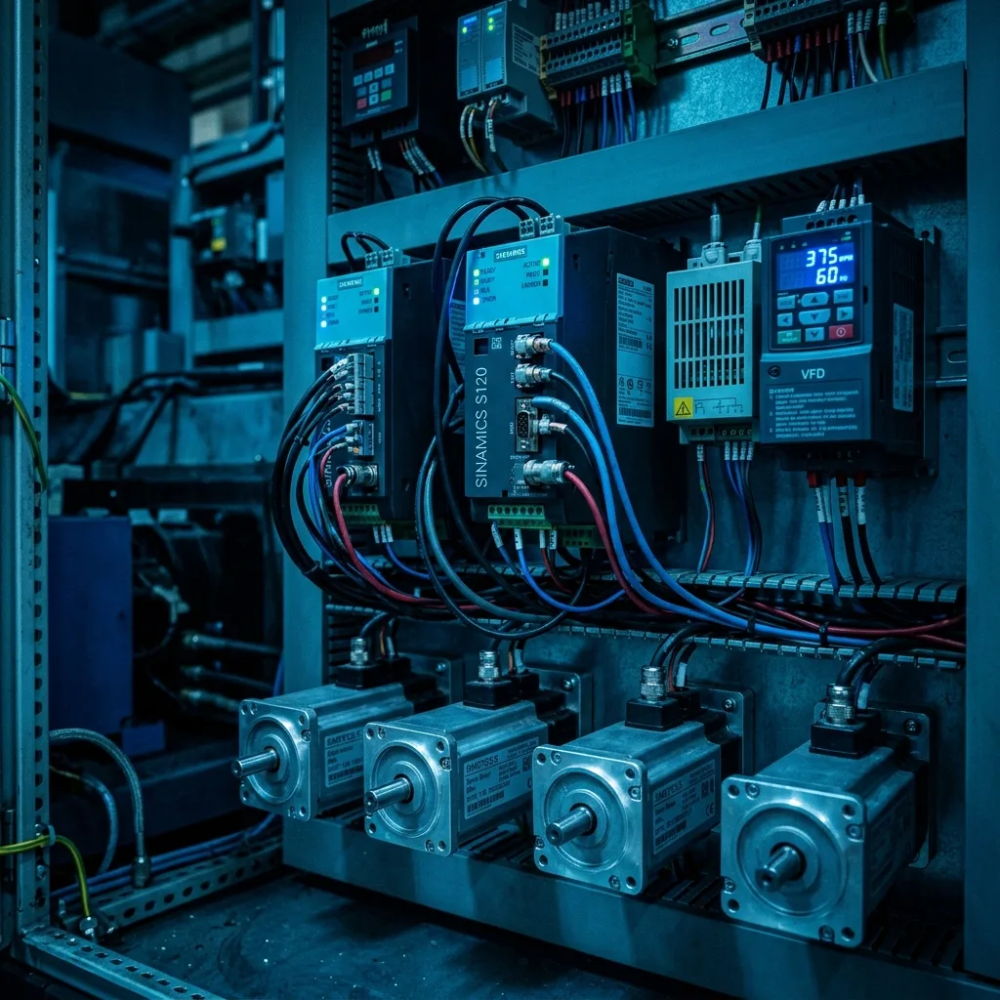

Guía Completa de Control de Movimiento (Motion Control) en la Automatización Industrial: Servomotores, VFDs y Coordinación por PLC
Publicado por el Equipo de Ingeniería de Robologix Automation | Coahuila, México
Resumen de Ingeniería de Motion Control:
El Control de Movimiento (Motion Control) es la disciplina de la automatización industrial que gobierna la posición, velocidad, aceleración y torque de ejes electromecánicos con precisión submilimétrica. Al integrar servomotores brushless, variadores de frecuencia VFD y encoders absolutos multiturno gestionados por controladores PLC (Allen-Bradley ControlLogix/CompactLogix o Siemens S7-1500 T-CPU) a través de redes deterministas como EtherNet/IP CIP Motion o PROFINET IRT, las plantas en Saltillo y Ramos Arizpe logran tiempos de ciclo ultra veloces, perfilado suave de levas electrónicas y erradicación de vibraciones en procesos críticos de estampado, corte y ensamble robótico.

Arquitectura de servodrives multi-eje interconectados mediante red determinista de fibra/Ethernet.
1. Elementos Fundamentales de un Sistema de Motion Control
Cualquier arquitectura de control de movimiento avanzada se estructura a partir de cuatro componentes interconectados en bucle cerrado:
Controlador de Movimiento (Motion Controller)
Calcula perfiles de trayectoria (trapezoidales, S-Curve), interpolación de coordenadas y sincronización de ejes maestros/esclavos.
Servodrive o Amplificador de Potencia
Transforma comandos de bajo voltaje en impulsos de corriente trifásica modulada (PWM) hacia los devanados del motor.
Motor Eléctrico (Servomotor / VFD / Pasos)
Convierte la energía eléctrica en torque mecánico rotativo o lineal con bajísima inercia y alta respuesta dinámica.
Dispositivo de Realimentación (Encoder / Resolver)
Mide en milisegundos la posición exacta del eje (incremental o absoluta Hiperface DSL / EnDat) cerrando el lazo de control.
2. Servomotores vs. Variadores de Frecuencia (VFD): ¿Cuándo Usar Cada Uno?
| Parámetro | Servosistemas (Kinetix 5700 / SINAMICS S120) | Variadores VFD (PowerFlex 525 / SINAMICS G120) |
|---|---|---|
| Precisión de Posición | Milimétrica y sub-angular (encoders de 24 bits de resolución). | Orientada a control de velocidad continuada; posición aproximada en bucle abierto. |
| Respuesta Dinámica | Aceleraciones violentas y cambios de sentido en milisegundos. | Rampas de aceleración suaves para evitar sacudidas mecánicas. |
| Torque a Cero Velocidad | Mantienen 100% de torque sostenido sin sobrecalentamiento (holding torque). | Requieren ventilación forzada o modo de control vectorial si se operan a baja frecuencia. |
| Aplicaciones Típicas | Pick and Place, celdas de soldadura robótica, cortadoras volantes, alimentadores de prensa. | Transportadores de banda, bombas de fluidos, ventiladores industriales, agitadores. |
3. Sincronización Determinista: CIP Motion y PROFINET IRT
En el pasado, coordinar múltiples ejes requería tarjetas analógicas dedicadas de +10V/-10V con cableado propenso al ruido. En 2026, los controladores PLC ejecutan instrucciones de Motion de forma nativa sobre redes Ethernet estándar deterministas:
- CIP Motion sobre EtherNet/IP (Rockwell Automation): Permite controlar ejes de movimiento directo desde Studio 5000 con instrucciones de movimiento estandarizadas (MSO, MSF, MAH, MAG, MAPC).
- PROFINET IRT (Siemens): Garantía de sincronización con jitter menor a 1 microsegundo, vital para sistemas de impresión flexible, extrusión y empaque de alta velocidad.
4. Sintonización (Tuning) y Optimización de Lazos PID
Un servomotor mal sintonizado provoca vibraciones audibles, calentamiento excesivo, error de seguimiento de posición (Following Error) y desgaste prematuro de sprockets o husillos de bolas. En Robologix Automation aplicamos técnicas avanzadas de autotuning, sintonización analítica de ganancias de posición (Kp), velocidad (Kv) e integral (Ki), así como filtros notch para cancelar frecuencias de resonancia mecánica en planta.
Especialistas en Motion Control de Robologix Automation
Eliminación de error de seguimiento y desacoplamiento de frecuencias resonantes en lazos Kinetix y SINAMICS.
Programación de levas complejas (MAG, MAPC) para corte al vuelo y mesas rotativas sin desgaste mecánico.
Ingenieros de campo para emergencias de servomotores y drives en Saltillo, Ramos Arizpe y Derramadero.
Artículos Técnicos Relacionados:
¿Requiere Asistencia Técnica para Configurar o Integrar Servomotores y VFDs?
En Robologix Automation somos expertos en sincronización de ejes, sintonización de servodrives Kinetix / SINAMICS y puesta en marcha de celdas de alta velocidad en Saltillo y Ramos Arizpe.
Hablar con un Ingeniero de Motion Control